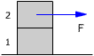
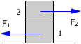
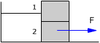

En el sistema de la
figura los bloques tienen masas m1, m2. El
coeficiente de rozamiento entre bloques y superficie vale μ . |
 |
En el sistema de la
figura los bloques tienen masas m1, m2. La
superficie es lisa y el coeficiente de rozamiento entre bloques
vale μ |
 |
En el sistema de la
figura, los bloques tienen igual masa m = 5 kg y la fuerza aplicada
es F = 30 N. Determina la aceleración de los bloques |
 |
En el sistema de la figura, los bloques tienen igual masa m = 10 kg y las fuerzas aplicadas valen F1 = 29 N, F2 = 7 N . Sabiendo que todos los coeficientes de rozamiento valen μ= 0.1 determina la aceleración de los bloques |
 |
Calcula la aceleración
de los bloques y la tensión de la cuerda |
 |
La fuerza F hace ascender verticalmente al sistema mostrado en la figura. Sabiendo que la cuerda que une los bloques tiene una masa m3, calcula la aceleración del sistema y las tensiones en los extremos de la cuerda |
 |
El sistema de la figura asciende por la rampa con velocidad constante, calcula la fuerza F necesaria y la deformación del muelle Datos: |
 |
Determina la lectura de la bascula mientras el bloque desliza por la rampa lisa |